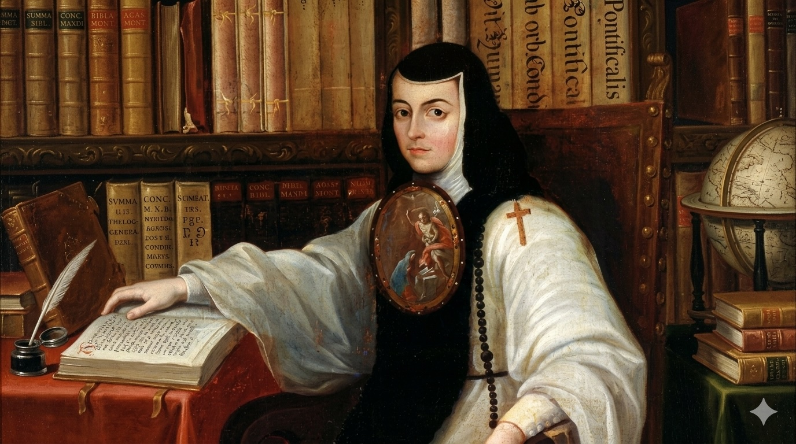

Literature Humanities II · Spring Project II
La Respuesta
An editorial apparatus for pages 153 to 157 of Sor Juana Inés de la Cruz's Response to Sor Filotea de la Cruz (1691)
Book Cover
assets/images/cover.jpg
I
Editor's Introduction
Historical moment, formal features, and our editorial argument.
→
II
Footnotes
The passage with 20+ substantive notes keyed by paragraph.
→
III
Image Program
Eight images: maps, art, objects, with critical analysis.
→
IV
Collaboration
How the group divided labor, disagreed, and decided.
→